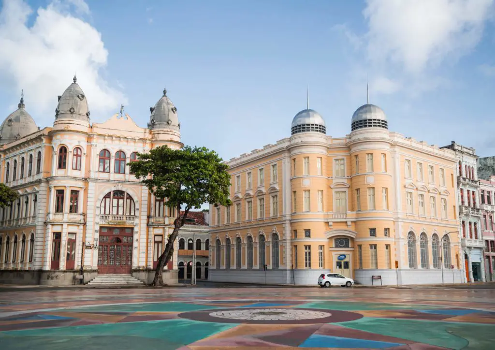
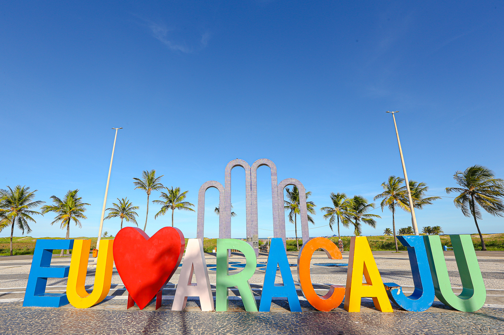

Destinos
Confira os melhores destinos no nosso site
Bahia
A Bahia é um destino marcado pela mistura de cultura, história e paisagens inesquecíveis. Em Salvador, destaque para o Pelourinho, o Elevador Lacerda e o Farol da Barra, onde a história e o mar se encontram.
O estado também encanta com suas praias, como Morro de São Paulo, Praia do Forte e Itacaré, além da culinária e da musicalidade que fazem da Bahia um lugar que se sente, não apenas se visita.

Pernambuco
Pernambuco é vibrante e cheio de identidade, onde a cultura está presente em cada detalhe. Recife reúne história e modernidade, com atrações como o Marco Zero, o Instituto Ricardo Brennand e o Recife Antigo.
Olinda, com suas ladeiras coloridas e igrejas históricas, é um dos pontos mais marcantes do estado, enquanto Porto de Galinhas se destaca pelas piscinas naturais e águas cristalinas do litoral pernambucano.

Sergipe
Sergipe encanta pela simplicidade, tranquilidade e beleza natural. Em Aracaju, a Orla de Atalaia é um dos principais cartões-postais, ideal para caminhadas e lazer à beira-mar.
No interior do estado, o impressionante Cânion do Xingó, às margens do Rio São Francisco, oferece uma experiência única em meio à natureza, mostrando que Sergipe, mesmo pequeno, guarda grandes surpresas.
